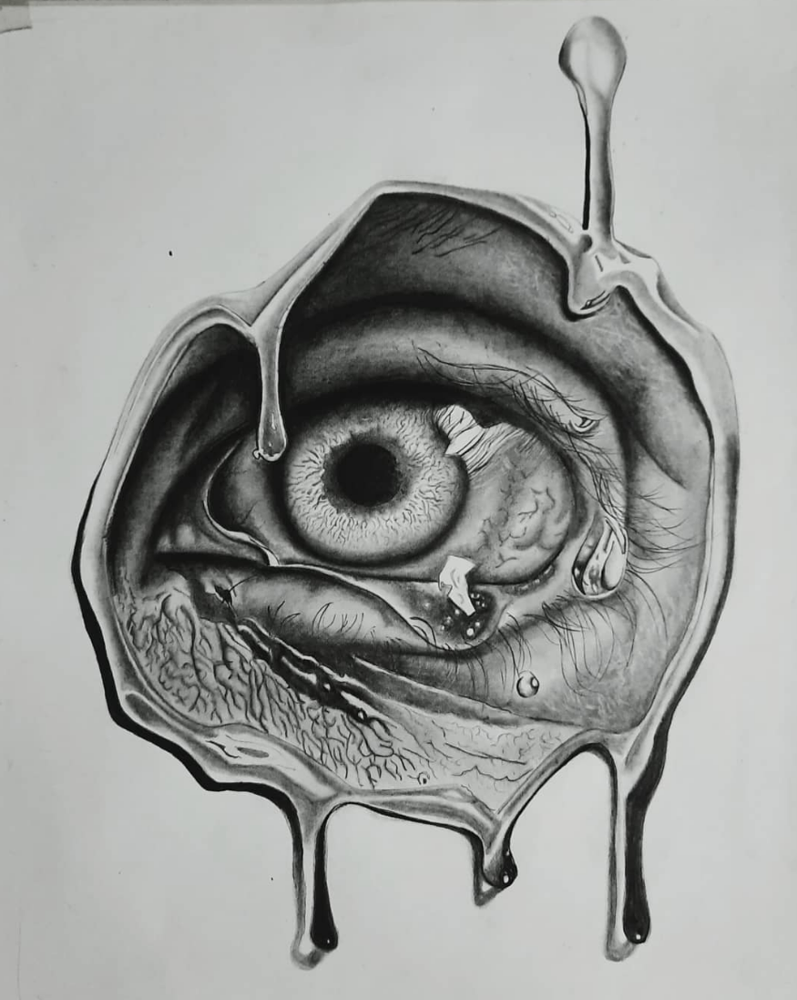
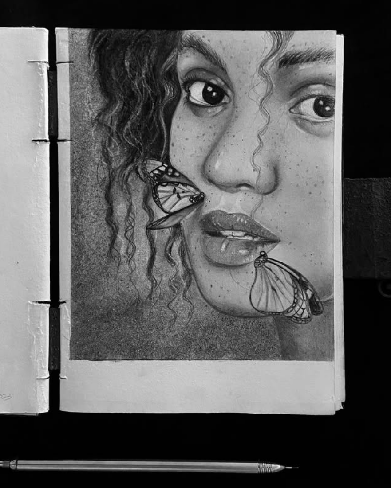

Honey Eye
"Honey Eye" is a striking hyperrealistic charcoal artwork that captures the intricate beauty of the human eye. The detailed textures, soft lashes, and play of light and shadow showcase exceptional skill and depth.
This piece goes beyond realism, evoking emotion and connection through its soulful expression. The timeless quality of charcoal adds a raw, intimate feel, making "Honey Eye" both captivating and unforgettable.

Water
"Water" is a mesmerizing hyperrealistic charcoal artwork that captures the fluidity and essence of water with stunning precision. Every ripple, reflection, and subtle gradient is intricately detailed, bringing the movement and texture of water to life.
The charcoal medium adds a timeless and dramatic contrast, highlighting the interplay of light and shadow in a way that feels almost tangible. "Water" is a breathtaking piece that showcases both the artist’s technical mastery and their ability to evoke emotion through realism.

Shy
"Shy" is a breathtaking hyperrealistic charcoal artwork that beautifully captures the quiet elegance of a girl lost in her emotion. The intricate details of her expression, from the delicate softness of her gaze to the subtle tilt of her face, convey vulnerability and introspection.
The use of charcoal enhances the depth and contrast, drawing attention to the play of light and shadow that brings the portrait to life. "Shy" is a masterful blend of technical precision and emotional storytelling, leaving viewers captivated by its raw beauty and authenticity.

Last breath
"Last Breath" is a powerful hyperrealistic charcoal artwork that captures the fragility and poignancy of a fleeting moment. The intricate details, from the delicate textures of the skin to the subtle shadows and highlights, convey an intense sense of emotion and finality.
The use of charcoal adds a raw and dramatic depth, emphasizing the interplay of light and darkness, as if time itself is holding still. "Last Breath" is a hauntingly beautiful piece that resonates deeply, reflecting both the vulnerability and the profound stillness of life’s final moments.
Butterfly
"Butterfly" is a captivating hyperrealistic charcoal artwork that beautifully blends innocence and freedom. The delicate features of the girl are expertly rendered, with every detail from her soft expression to the gentle flow of her hair capturing a serene vulnerability.
The butterfly, a symbol of transformation and grace, is intricately drawn with fine detail, its wings almost alive with texture and light. The use of charcoal brings depth and contrast, allowing the viewer to feel the movement of the piece while evoking a sense of peaceful harmony between the girl and nature.

Irish Smith
A beautifully crafted piece that captures personality and emotion with stunning realism and depth.
Reply
Christine Stewart
An exceptional artwork that blends lifelike detail with vibrant depth, bringing personality to life.
Reply
Chintan Patel
A captivating piece that perfectly combines realism, emotion, and artistic depth.
Reply
John Doe
A remarkable artwork that beautifully captures emotion and personality with stunning detail.
Reply
Ben Afflick
A striking artwork that masterfully captures personality and emotion with exquisite detail and depth.
Reply
Jean Doe
A remarkable piece that skillfully conveys emotion and personality through detailed realism and rich depth.
Reply